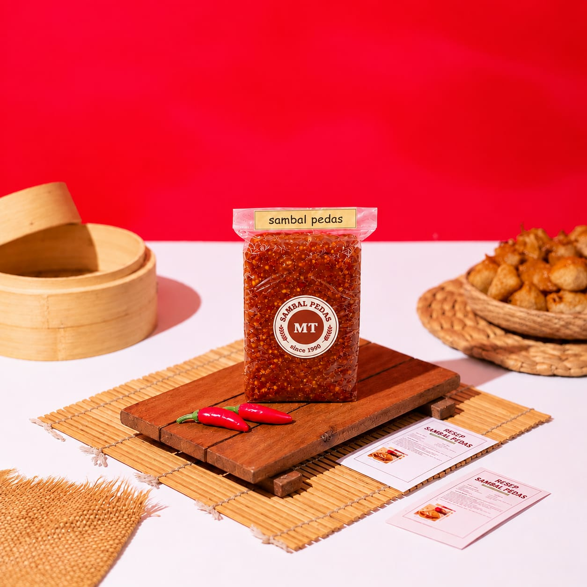
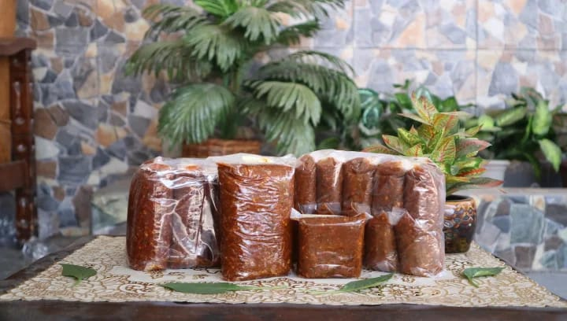
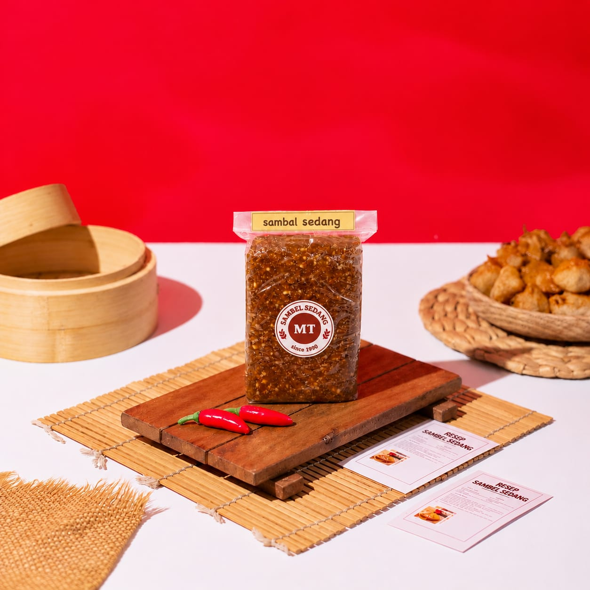
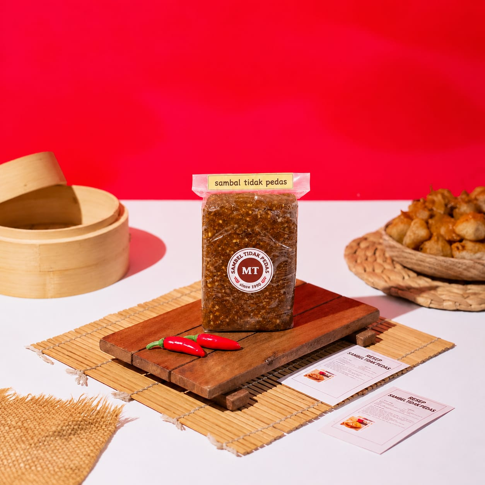
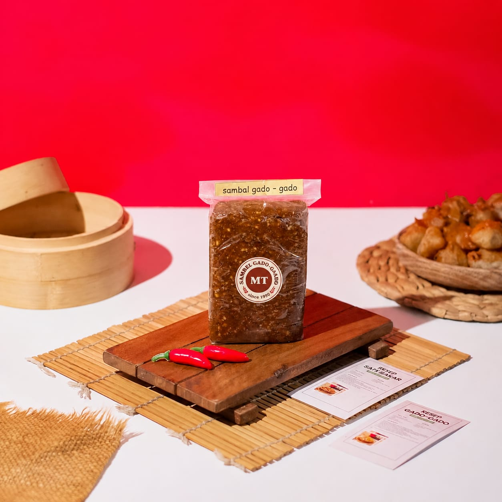

Sambal Pecel Pedas
Perpaduan kacang pilihan dan cabai dengan cita rasa pedas yang menggugah selera. Cocok bagi pecinta makanan pedas yang ingin menikmati sensasi pecel khas Kediri.
Sambal Pecel khas Kediri dibuat dari racikan bumbu kacang pilihan dengan perpaduan rempah tradisional. Memiliki cita rasa gurih, manis, dan sedikit pedas yang cocok untuk menemani berbagai hidangan. Dibuat dengan resep khas yang menjaga kelezatan cita rasa asli Kediri.
Lihat produk Pesan sekarang
Berawal sekitar tahun 1990, usaha ini dirintis oleh Ibu Bibit Srilestari yang awalnya memiliki toko kelontong dengan menjual berbagai kebutuhan sehari-hari, mulai dari beras, mi, telur, hingga kebutuhan dapur lainnya.
Suatu hari, ada seseorang yang menitipkan sambal pecel untuk dijual di toko tersebut. Ternyata, sambal pecel itu mendapat respons yang sangat baik dan laris di pasaran. Namun, setelah beberapa waktu, orang tersebut tidak lagi menitipkan produknya. Dari situlah muncul ide untuk mencoba membuat sambal pecel sendiri.
Ibu Bibit Srilestari kemudian meminta resep kepada penjual pecel langganannya. Resep tersebut selanjutnya dikembangkan dan dimodifikasi sendiri hingga menemukan komposisi rasa, tekstur, serta teknik pengemasan yang tepat agar sambal pecel dapat disimpan dalam waktu berbulan-bulan.
Pada awalnya, seluruh proses produksi dikerjakan secara mandiri. Produk kemudian mulai dipasarkan dengan cara dititipkan ke berbagai toko dan dijual langsung di sekitar kawasan pabrik Gudang Garam, khususnya saat jam pulang kerja para buruh.
Seiring berjalannya waktu, sambal pecel semakin dikenal dan diminati banyak orang. Melihat perkembangan tersebut, Ibu Bibit Srilestari memutuskan untuk menutup toko kelontongnya dan berfokus mengembangkan usaha sambal pecel. Produksi pun mulai dibantu oleh sekitar 3-5 orang karyawan serta anak-anaknya.
Memasuki tahun 1996, permintaan mulai datang dari luar kota. Kemudian, pada tahun 2001, Bapak Imam Mukti yang telah pensiun dari pekerjaannya di Gudang Garam turut membantu mengembangkan usaha bersama Ibu Bibit Srilestari.
Sejak saat itu, usaha semakin berkembang dengan jangkauan pemasaran yang lebih luas. Pesanan tidak hanya datang dari berbagai daerah di Indonesia, seperti Jakarta dan luar pulau, tetapi juga mulai menjangkau pelanggan dari luar negeri.
Kini usaha ini dikerjakan tiga puluh orang dari lingkungan sekitar. terus dikembangkan dengan mempertahankan cita rasa khas dan resep racikan keluarga yang telah diwariskan dari generasi ke generasi..

Perpaduan kacang pilihan dan cabai dengan cita rasa pedas yang menggugah selera. Cocok bagi pecinta makanan pedas yang ingin menikmati sensasi pecel khas Kediri.

Menghadirkan perpaduan rasa gurih, manis, dan pedas yang seimbang. Pilihan tepat bagi yang menyukai rasa pedas dengan tingkat kepedasan sedang.

Memiliki cita rasa gurih dan manis dengan sensasi pedas yang tidak dominan. Cocok untuk anak-anak maupun siapa saja yang lebih menyukai hidangan tanpa rasa pedas.

Racikan bumbu kacang dengan cita rasa gurih dan manis yang cocok sebagai pelengkap aneka sayuran, tahu, tempe, kentang, dan bahan gado-gado lainnya.